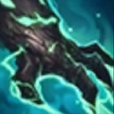
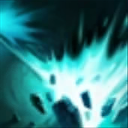
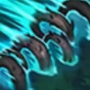

起手裝備
 紅水晶
紅水晶
7.3f官方未列此英雄的一般技能／基礎能力調整；本輪按技能與位置需求複核評級、配置及裝備間接影響。 打野共通：燃燒基礎18–158、額外雙防係數20%；節約30金、落後55金，不能沿用舊清營與購裝時間。
維持 B。指定接近與範圍限制能開戰、保排；傷害需要時間，先手過深仍可能在隊友到達前倒下。 條件型選擇；對線、陣容或執行成本較高，不宜當通用首選。
日炎聖盾 → 無盡絕望：前者提供近身持續傷害與清兵，後者補身邊有敵人時的持續交戰。保留五件成裝與獨立鞋線；核心未成形時不把最後一格的保命／穿透能力當成已有。
冰霜霸主：需先硬控到英雄，防護與緩速服務跟進或反開，空招不會提供同樣容錯。其餘選用巨像勇氣、骨甲、堅毅、卓越，依本頁輸出方式與生存需求配套。
閃現＋重擊。重擊留意物件血線，野區收益與承傷調整後先判斷續航再入侵；另一技能服務進退，不能預設同時有點燃。
本站獨立邏輯複核：以既有手機版技能／裝備／符文資料與已整理的7.3f官方差異推演；本輪不採用外站評級、勝率或推薦配置。 完成策略與配置一致性複核，不等於全部技能逐級數值、傷害計算及所有特殊互動已實測；既有缺證項目仍保留。
黎安卓的折磨：少10魔攻，燃燒機制仍保留；對高生命前排仍有用途，對脆皮的短爆發配置需重新衡量。
日炎聖盾 → 無盡絕望：前者提供近身持續傷害與清兵，後者補身邊有敵人時的持續交戰。保留五件成裝與獨立鞋線；核心未成形時不把最後一格的保命／穿透能力當成已有。


五件成裝與鞋子分開列示；起手與核心是購買路線，不是額外佔用的成裝欄位。鞋子完成時機仍依對線壓力與回城金錢調整。


冰霜霸主：需先硬控到英雄，防護與緩速服務跟進或反開，空招不會提供同樣容錯。其餘選用巨像勇氣、骨甲、堅毅、卓越，依本頁輸出方式與生存需求配套。


閃現＋重擊。重擊留意物件血線，野區收益與承傷調整後先判斷續航再入侵；另一技能服務進退，不能預設同時有點燃。
加點優先：Q > E > W
優先 Q > E > W，以荊棘摧殘承擔主要循環；初級取點仍依15級表保留完整基本技能，不把主升順序誤認成開局必須連點同一招。

普攻週期性造成額外魔法傷害並治療自身；施法或被敵方技能命中會縮短冷卻。

釋放震波造成魔法傷害、緩速並把近身敵人擊退。
化為扭曲根鬚衝向指定敵人，期間不可被選取，抵達後將其定身。
丟出樹苗在地面守候，發現敵人後追擊並爆炸；草叢中的樹苗傷害與持續時間更強。

召喚多排巨大根鬚向前推進，命中敵方英雄會造成傷害與長時間定身。
指定接近與範圍限制能開戰、保排；傷害需要時間，先手過深仍可能在隊友到達前倒下。
2技突進定身 → 普攻觸發被動 → 1技擊回 → 3技封路
二技貼近後移動到敵人退路，用一技把目標擊向隊友，再丟樹精封鎖下一段撤退。
4技遠距藤蔓 → 2技跟進 → 1技擊退 → 3技封路
大絕從側面或河道長距離施放以延長定身，藤蔓命中後再用二技與一技延續控制。
3技草叢佈置 → 2技鎖定 → 1技 → 4技封退路
提前在物件入口草叢放樹精，敵人踩中緩速後點控進場，再用大絕封住其後援與撤退。
一技對野怪有額外傷害，搭配被動回復可保持健康清野。Gank 時二技是無法被指定的點控突進，貼近後繞到目標身後用一技將其擊回隊友方向。
日炎聖盾 → 無盡絕望成形後，再接冰霜之心。移除過早的好戰者，先日炎清營，再接近身續航與雙防；依敵陣把冰心換成魔防，不帶輔助收入裝。
依敵方進場方向決定主動開戰或反開。被動治療需要普攻觸發，承傷時穿插普攻維持血量；不要在隊友距離不足時獨自二技進入敵陣。
指定接近與範圍限制能開戰、保排；傷害需要時間，先手過深仍可能在隊友到達前倒下。 名單僅作機制對位提示；優先看控制是否交掉、兵線／地形與隊友跟進，不宣稱勝率剋制榜。
對局名單是機制與分路判斷，不代表固定勝率；需同時看雙方熟練度、兵線與陣容。
前期入侵時線權比單挑更重要；優先保住可刷野區，以控制配隊友反蹲。
移除過早的好戰者，先日炎清營，再接近身續航與雙防；依敵陣把冰心換成魔防，不帶輔助收入裝。
留意前期入侵與視野側的進場，沒有線權時別獨自爭野。
避開標槍後再決定交戰；被標記時不要低估豹形追擊距離。
替換以本頁五件成裝為基準；同一格建議擇一。二、三級鞋是一條升級線，換鞋時整條同步；魔劍進化不占新欄位。
高
觸發：暴擊射手是主要威脅時替換末件，不以純生命代替物防。
雅瑪蘭守護像 → 蘭頓之兆
暴擊射手是主要威脅時替換末件，不以純生命代替物防。
暴擊射手是主要威脅時替換末件，不以純生命代替物防。
主動裝占成裝格；鞋子更換時整條升級路線一起更換。
高
觸發：持續魔法傷害令你無法站住時補魔防，必要時提前至第三件。
已帶此裝時保留；同一格多個建議擇一。
主動裝占成裝格；鞋子更換時整條升級路線一起更換。
高
觸發：敵方普攻與回復同時形成威脅時補重創，先確認觸發條件。
雅瑪蘭守護像 → 荊棘之甲
敵方普攻與回復同時形成威脅時補重創，先確認觸發條件。
敵方普攻與回復同時形成威脅時補重創，先確認觸發條件。
主動裝占成裝格；鞋子更換時整條升級路線一起更換。
高
觸發：自己有足夠坦度且隊友承傷壓力大時，以功能裝保護主力。
雅瑪蘭守護像 → 騎士誓願
自己有足夠坦度且隊友承傷壓力大時，以功能裝保護主力。
自己有足夠坦度且隊友承傷壓力大時，以功能裝保護主力。
主動裝占成裝格；鞋子更換時整條升級路線一起更換。
高
觸發：二級鞋改水星之靴，三級鞋對應鎖鏈軍靴；韌性不縮短擊飛。
鍍板鋼蓋 → 水星之靴
魔法傷害及可被韌性縮短的控制占主導時，鞋線整條改水星之靴→鎖鏈軍靴。
魔法傷害及可被韌性縮短的控制占主導時，鞋線整條改水星之靴→鎖鏈軍靴。
主動裝占成裝格；鞋子更換時整條升級路線一起更換。
隊伍已有可靠前排，需要你補持續魔法傷害與控制，而非由你獨自承受第一波火力。


增幅典籍起手；黎安卓→血書詛咒建立持續傷害，再接控制協作與生存。此為同分路7.3a參考經7.3b差異複核的條件變體，不帶輔助任務裝；主線坦裝情境替換不能原封套入本變體。
7.3f差異核對：本頁已核對本版官方變動與配置引用；本輪逐份獨立評估Tier與配置，不採外站排行；賽勒斯為保守暫定。未核實的完整成長數值保留註記。查看校正範圍。
本頁校正版本：7.3f；校正日期：2026-11-13。
參考來源標示版本：7.3f（官方差異與既有遊戲資料）
完成策略與配置一致性複核，不等於全部技能逐級數值、傷害計算及所有特殊互動已實測；既有缺證項目仍保留。
評級理由：維持 B。指定接近與範圍限制能開戰、保排；傷害需要時間，先手過深仍可能在隊友到達前倒下。 條件型選擇；對線、陣容或執行成本較高，不宜當通用首選。
維持 B。指定接近與範圍限制能開戰、保排；傷害需要時間，先手過深仍可能在隊友到達前倒下。 條件型選擇；對線、陣容或執行成本較高，不宜當通用首選。